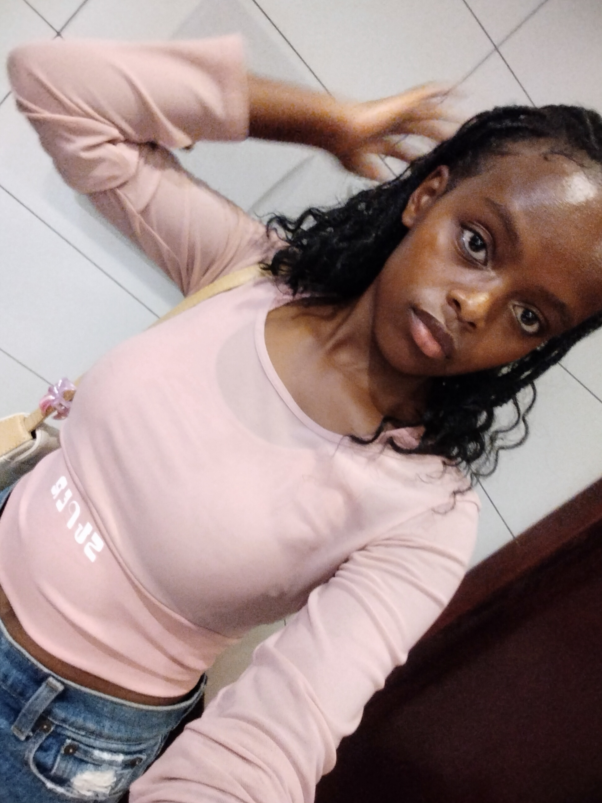

Welcome to My Portfolio!!
Hello my name is Celline Jelagat Maiyo. I am a Computer Science student with a growing interest in technology,programming and innovation. i enjoy exploring new ideas and discovering how technology can be used to solve everyday problems.
I am currently building my skills in web development and programming.My learning journey involves exploring HTML,CSS,JavaScript and other areas in Computer science. I believe in learning through practice, asking , asking questions and challenging myself with new experiences.
This portfolio is areflection of my journey as a beginner in the technology field. Here, you will find more about me, the skills I am developing and the projects i have worked on. I look forward to growing, creating and becoming a skilled technology professional.

What I'm Learning
As a computer science student, I am exploring different ares of technology and developing practical skills that will help me grow.
- HTML - Creating the structure of websites.
- CSS - Styling and designing webpages.
- JavaScript - Making websites interactive.
- Python - Learning programming fundamentals.
- Git and GitHub - Managing and sharing projects.
My Interests
- Technology and innovation
- Watching documentaries
- Learning new skills
- Creative problem-solving
- Exploring new experiences